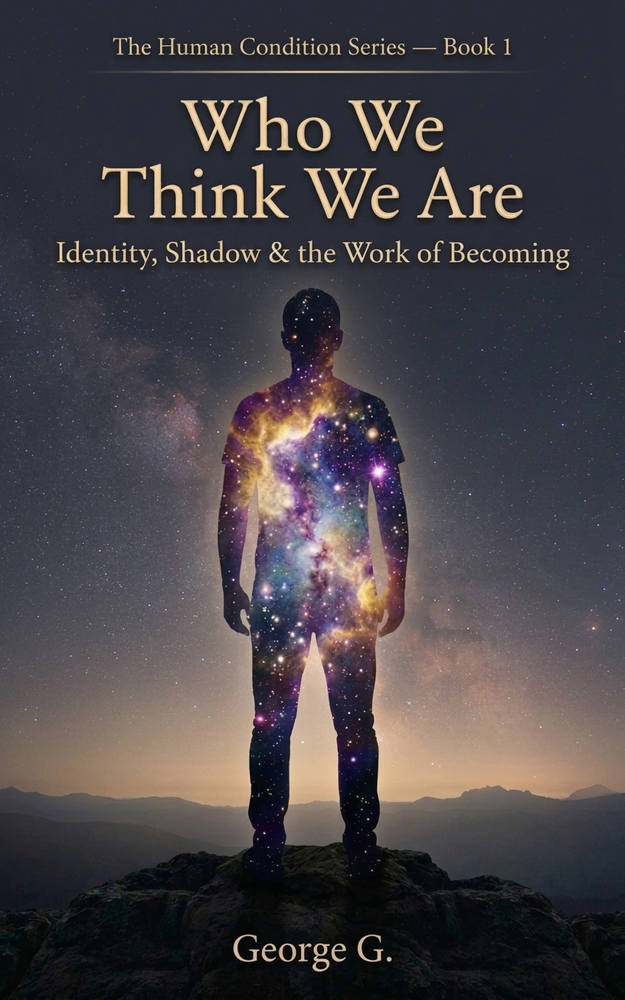
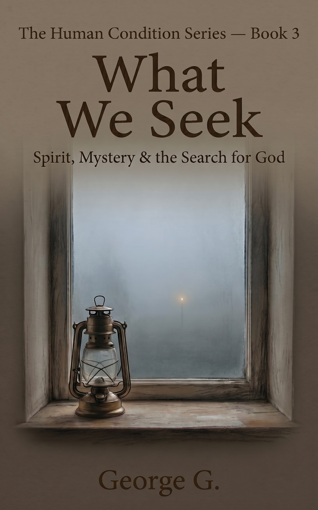
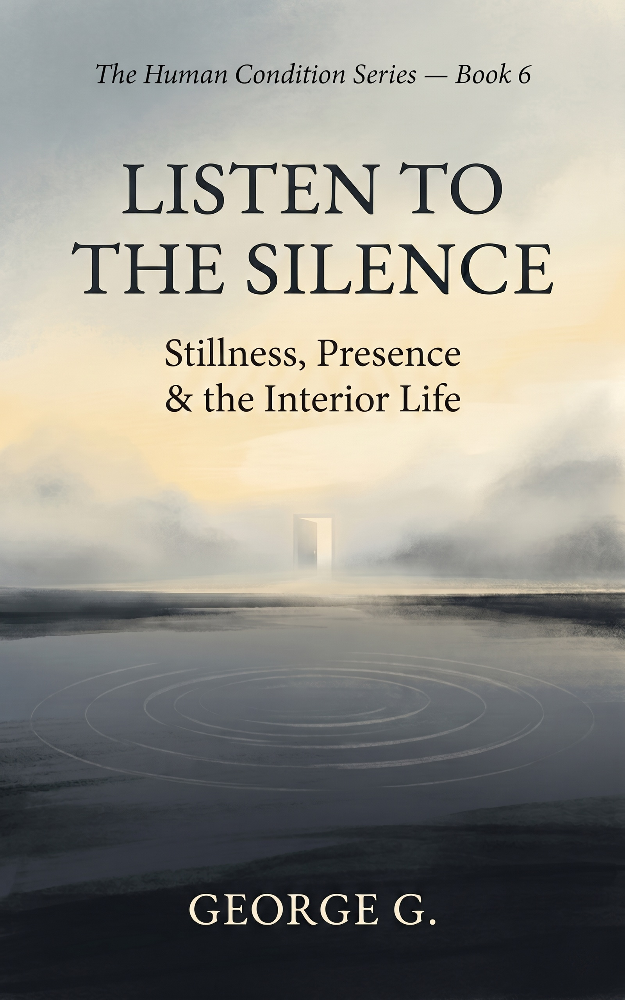
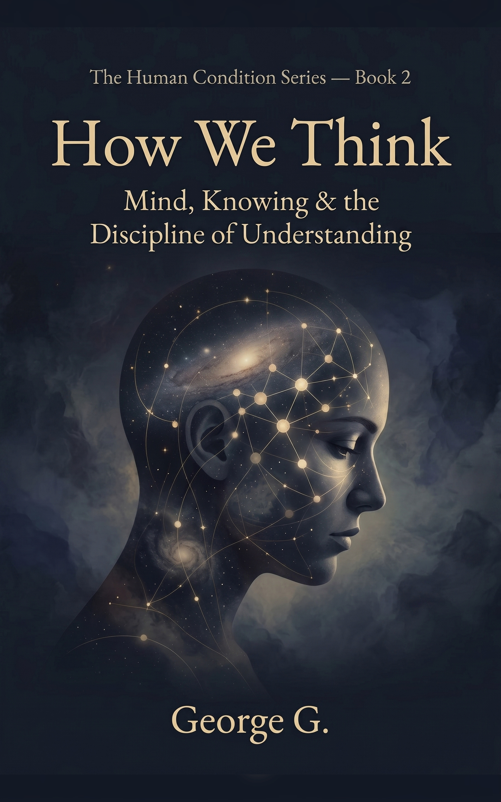
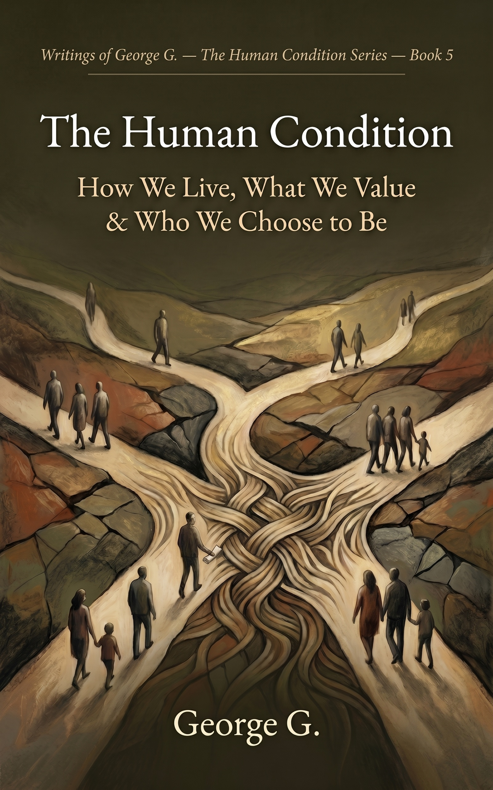
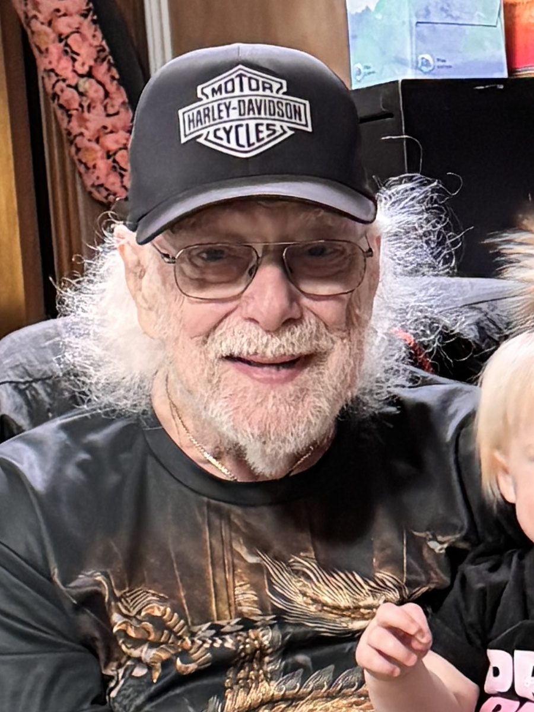

Book 1
Who We Think We Are
Identity, Shadow & the Work of Becoming
Who am I, really, beneath the masks I wear?
The Human Condition Series
The Human Condition Series is a reflective journey through the questions that shape a human life: who we are, how we think, what we seek, how we love, what we value, and how we learn to be still. Written with honesty, tenderness, and hard-earned wisdom, George G.'s reflections invite readers to slow down and look beneath the surface of ordinary life.



“For those willing to look beneath the life they were handed, and do the harder work of becoming who they are.”
Books
Six volumes drawn from decades of private writings on identity, consciousness, spirit, love, responsibility, and stillness.
Book 1
Identity, Shadow & the Work of Becoming
Who am I, really, beneath the masks I wear?

Book 2
Mind, Knowing & the Discipline of Understanding
How do I know what I think I know?
Book 3
Spirit, Mystery & the Search for God
What is the soul reaching toward?
Book 4
Relationship, Forgiveness & What Remains
The bonds that make us human and what survives their breaking.

Book 5
How We Live, What We Value & Who We Choose to Be
Beyond the inner life — the shared world we build through our choices.
Book 6
Stillness, Gratitude & the Present Moment
The quiet center; what remains when the noise falls away.
About the Author
George G. was born on 04/25/1940. Over the course of a long career that moved from accounting to counseling, he became a student of the inner life, shaped by the work of Virginia Satir, Carl Jung, and a thirty-day silent retreat that changed the direction of his thinking. He wrote for decades without any intention of publication. These reflections were his private way of working through the questions that matter most: truth, human nature, what it means to live well, and what it means to die without regret.
Across the series, George writes as a seeker, a counselor, a student of the soul, and a man looking back with humility and hope.

Blog
A simple blog area for excerpts, launch notes, readings, and short reflections from the series.
Connect
Facebook, blog updates, and book launch links live here. Facebook URL is ready to wire in as soon as we confirm George’s exact profile or page.